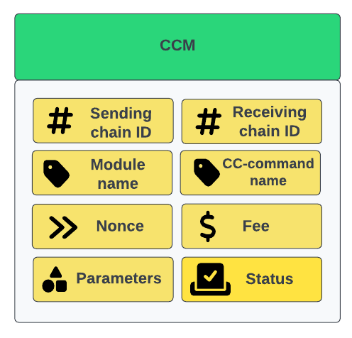
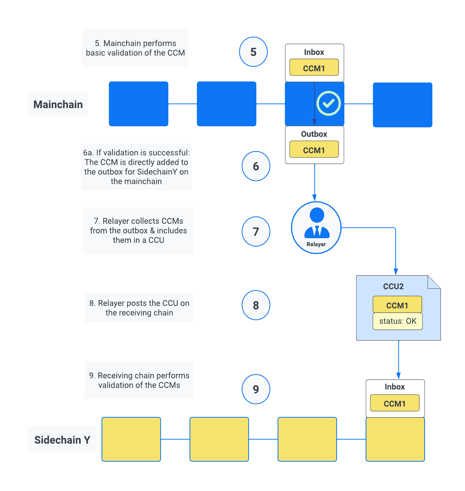

Cross-chain communication
On this page, we dive deeper into the details how cross-chain communication works in the Lisk ecosystem, by describing the different components and the general processes, how state changes are executed across chains in the Lisk ecosystem.
Inducing state changes across chains with CCMs
Cross-chain messages, or CCMs, are the central component of the cross-chain communication between different sidechains.
Similar to a normal transaction, a CCM includes a reference to a command that triggers state mutations. But in case of a CCM, the command always refers to a cross-chain command, and the state changes are not only executed in the sending chain, but also in the receiving chain.
|
A Cross-chain message (CCM) is the envelope for a cross-chain command. Cross-chain commands, or CC-commands, induce a state transition in the receiving chain. |
A CCM includes the following properties:

- sending-chain ID
-
Used to identify the chain sending the cross-chain message. The sending chain ID is used, for example, if the message triggers an error and has to be sent back.
- receiving-chain ID
-
Used to identify the chain receiving the cross-chain message. On the mainchain, the receiving chain ID is read to route the message to the corresponding chain outbox.
- module & cross-chain command name
-
Once the message has reached the receiving chain, the two properties
moduleandcrossChainCommandspecify which logic should be used to validate and execute the message on the receiving chain. The module always corresponds to the module which includes the specified cross-chain command. - nonce
-
When a cross-chain message is created and added to the partner chain outbox, the nonce of the sending chain (total number of messages that were added to outboxes so far) is added to the message in the nonce property. This allows all messages to be uniquely identified by the (sendingChainID, receivingChainID, nonce, status) tuple, which implies that the message ID defined below will be unique for all messages in the ecosystem. The uniqueness of messages in the Lisk ecosystem is important for identifying messages with message IDs and tracking them throughout the ecosystem.
- fee
-
For all cross-chain messages, the message fee is used to account for the transaction processing in the receiving chain. This fee must be transferred from the sending chain account to the receiving chain account in order to maintain the correct balances on all chains in the ecosystem. The token ID for this fee is stored in the channel account and is by default the token ID of the LSK token. As it is stored in the channel account, it does not need to be repeated in the message. Being the main utility token of the Lisk ecosystem, the LSK token is always the token ID for this fee for channels between the Lisk mainchain and registered sidechains.
- parameters
-
The params property of the messages is defined by each module and can follow any schema, similar to the
paramsproperty of a transaction. Theparamsproperty is not deserialized or validated by the Interoperability module. In the Lisk ecosystem, all cross-chain messages are routed through the mainchain. This means that messages should always have a sufficiently small size in order to be easily included in mainchain blocks. As the mainchain payload size limit is 15 KiB, and other properties in the cross-chain updates will not be larger than 4 KiB, we limit the message size to 10 KiB. To guarantee that all messages can be included and handled, sidechains in the Lisk ecosystem should have a payload size limit equal to or greater than 15 KiB (15 x 1024 bytes). - status
-
The basic error handling for routing messages to other chains is done by the mainchain. Information about the reason why the message failed is stored in the status property. For example, in the case the receiving chain does not exist, is not active or has been terminated, the mainchain will return the message to the sending chain. The sending chain can then revert the message and potentially refund users. This design choice allows sidechains to send messages to other chains without needing to monitor the status (or even existence) of every other chain. The constant table lists the different status codes defined by the Interoperability module. To allow for future updates or improvements of the Interoperability module, other modules are restricted from using status codes up to 63 (included). Other modules may use other status codes larger or equal to 64.
Name |
Type |
Value |
CCM_STATUS_OK |
uint32 |
0 |
CCM_STATUS_MODULE_NOT_SUPPORTED |
uint32 |
1 |
CCM_STATUS_CROSS_CHAIN_COMMAND_NOT_SUPPORTED |
uint32 |
2 |
CCM_STATUS_CHANNEL_UNAVAILABLE |
uint32 |
3 |
CCM_STATUS_RECOVERED |
uint32 |
4 |
1. Using cross-chain transactions to generate CCMs
Let’s look at a example of a simple cross-chain transfer between Alice and Bob.

Alice has 10 LSK in her account on a chain called "Sidechain X". In this context, we refer to Sidechain X as the sending chain.
She wants to transfer 5 LSK to Bob, who has an account on another chain, "Sidechain Y", in this context the receiving chain.
Here is where cross-chain transactions (CCTs) come into play.
| A cross-chain transaction (CCT) is a transaction that, upon its execution, creates one or more cross-chain messages. |
In fact, a cross-chain transaction uses the identical schema as normal transactions. The only difference is, that a CCT refers to a cross-chain command, instead of a normal command.
This cross-chain command will:
-
execute the necessary changes on the sending chain (i.e. removing 5 LSK from Alices balance), and
-
also create CCMs to trigger the corresponding state changes in the receiving chain (i.e. add 5 LSK to Bobs balance).
2. Transferring CCMs in a CCU
Several cross-chain messages are collected together and posted to another chain as part of a cross-chain update transactions, aka CCU.
A CCU contains the following properties:
- sending-chain ID
-
Identifies the chain sending the cross-chain update. Only cross-chain update transactions coming from registered chains are valid, registered chains are the ones with an entry in the interoperability store corresponding to their
chainID. - validators update
-
The chain account stores an array containing the BLS keys and BFT weights required to validate the certificate signature. This array has to be updated if the validator set changes in the chain sending the certificate. The difference between the stored array and the new one is included in this property.
- certificate
-
Verifies the correctness of the data sent in the CCU. Consists of aggregated signatures of a set of the current validators of the sending chain. Anyone can obtain the full certificate from the blockchain by obtaining the corresponding block header, computing the unsigned certificate, and then obtaining the
aggregateCommitonce the block is finalized. - new certificate threshold
-
The threshold of block generators required to validate the certificate signature. This certificate threshold has to be updated if its value changes in the chain sending the certificate. In that case, the updated value is set in the
newCertificateThresholdproperty of the CCU. IfnewCertificateThresholdis set to0, it implies that the certificate threshold has not been changed in the sending chain. - inboxUpdate
-
The
inboxUpdatecontains the information relative to the messages to be included in the sending chain inbox. Cross-chain messages are stored in the chain outbox on the sending chain and in the corresponding inbox on the receiving chain. This property contains three elements:-
the
crossChainMessages: An array of cross-chain messages. ThecrossChainMessagesproperty must contain consecutive messages from the outbox. -
messageWitness: an inclusion witness into the outbox root: In the sending chain, all cross-chain messages are added to a regular Merkle tree attested by the outbox root. ThemessageWitnesscontains two values relative to that Merkle tree:-
the
partnerChainOutboxSize, giving the total messages sent by the partner chain, and -
the
siblingHashes, which is part of a regular Merkle proof. This Merkle proof is required if not all messages necessary to recompute the outbox root were given incrossChainMessages. If all messages required to compute the outbox root are included incrossChainMessagesthensiblingHashescan be left empty.
-
-
outboxRootWitness: An inclusion witness of this outbox root into the state root. The outbox root of the sending chain is part of a sparse Merkle tree attested by the state root (provided in the certificate). TheoutboxRootWitnessproperty is an inclusion proof into the state root of the outbox root computed from the receiving chain inbox,crossChainMessagesandmessageWitness. If the cross-chain update transaction contains an empty certificate, this property can also be left empty, as the required root was already attested in a previous cross-chain update.
-
2.1. Sidechain to mainchain

After the CCM has been created in step Using cross-chain transactions to generate CCMs, it is added to the outbox of the sending chain X.
From the outbox, a relayer collects the CCMs and creates a CCU with the properties described in step Transferring CCMs in a CCU.
A relayer is a network participant who collects CCMs in a CCU and, as the name suggests, relays them to the mainchain.
When the relayer posts a CCU, the included CCMs will be added to the inbox of the mainchain, and processed further from there.
| Because all information to create CCUs is public, anyone can assume the role of a relayer in the network. |
2.2. Mainchain to sidechain

After the CCM is included in the inbox of the mainchain, the mainchain performs the most important verifications on the CCM, e.g. it checks if the receiving chain exists, and has the status active.
If the verification on the mainchain is passed successfully, the CCM is added to the outbox of the mainchain, ready to be picked up by a relayer.
A relayer on the mainchain will include the CCM in a CCU and post it to the sending chain.
3. Executing the CCC on the receiving chain

Once the CCM is included in the inbox on the receiving chain Y, the remaining validations of the CCM are performed.
The Cross-chain commands, or CC-commands, induce a state transition in the receiving chain, if:
-
the receiving application understands the particular command, i.e. if it includes the required module to interpret the command name
-
the CCM includes all parameters required for the CC-command
If the validation is completed successfully, the CC-Transfer command is performing the intended state changes on the receiving chain, i.e. adding 5 LSK to Bobs account.